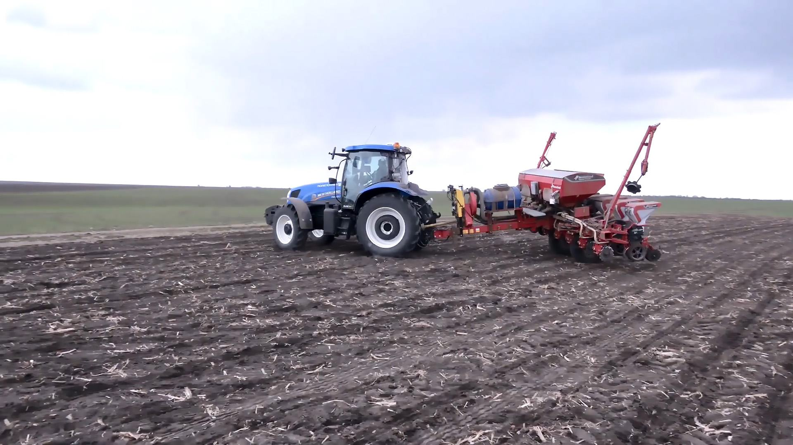
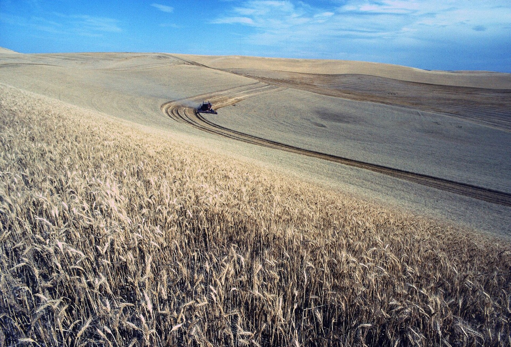
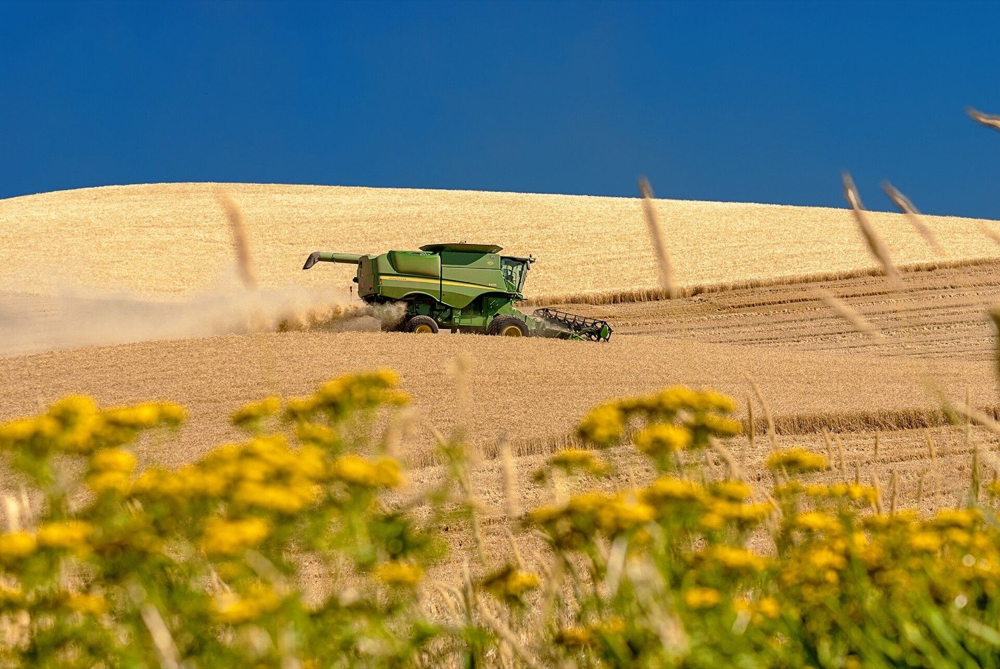

Soil first
We test every field before planting and rotate crops to keep the ground alive for the next generation.
Smart farming for a brighter tomorrow
Innovative technology. Higher yields.
A more sustainable future for generations to come.
Every strand starts with a single seed and a season of care. Grown for strength, harvested at its peak.
Explore the crop →Bred for protein and resilience, each ear carries up to fifty kernels, every one a full season of sunlight stored.
Its long awns are more than decoration. They shade the grain and keep feeding it right up until harvest.
Anatomy of an ear
Take a single ear apart and you find a precise structure: paired rows of spikelets, each one protecting its own kernels.
How we work

We test every field before planting and rotate crops to keep the ground alive for the next generation.

Drone surveys and moisture sensors tell us exactly when, and where, a field needs attention.

GPS-guided combines cut clean lines, so less grain is lost and every row is accounted for.